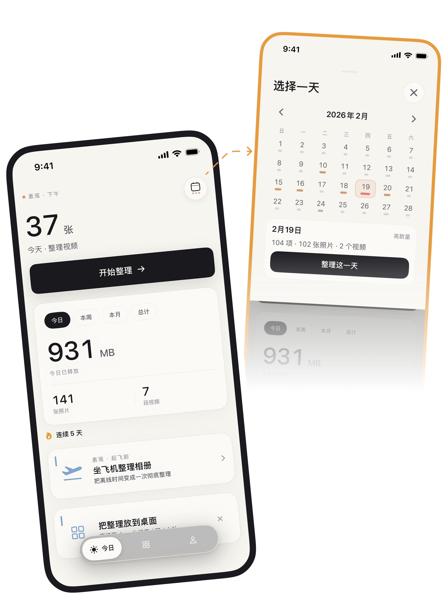
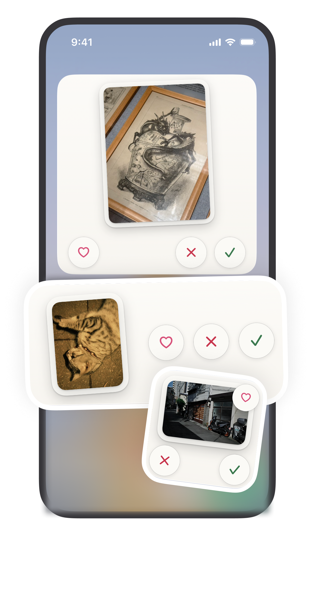
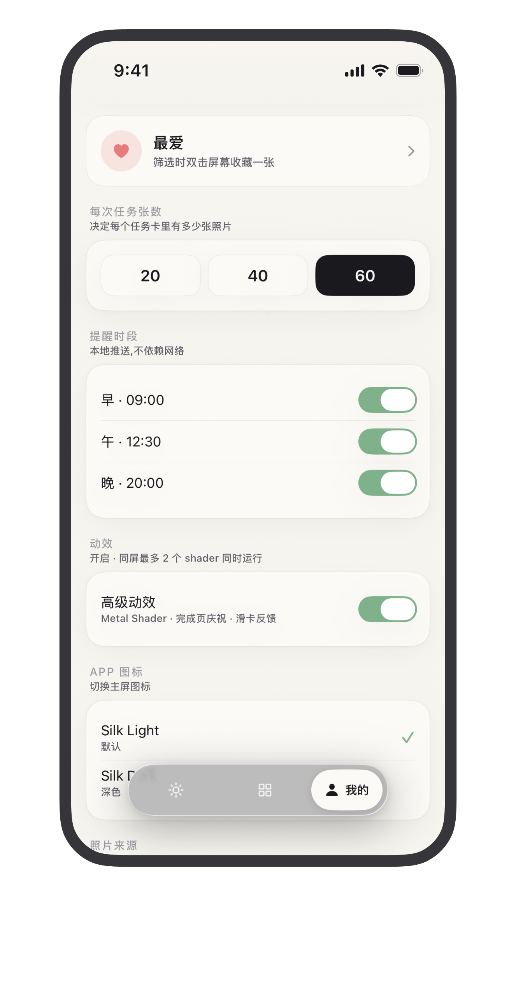

保留 Keep
待清 Review
心动 Love
How it feels
不是清理工具，是每天三分钟的相册整理仪式。
Not a one-tap cleaner. A small, safe, repeatable habit.
01
从今天这一组开始
SnapTidy 把庞大的相册拆成每天 20-60 张。你只需要完成眼前这一组。
One small set at a time.一张一秒，滑出判断
左滑待清，右滑保留，双击心动。决策轻，节奏快。
Swipe. Keep. Love.先标记，再确认
待清不等于删除。确认后才交给 iOS 移入「最近删除」。
Review before delete.Widget 变成入口
在桌面或锁屏看下一张、做一次判断，不必先打开 App。
Home & Lock Screen ready.iCloud & Offline
把等待 iCloud 的时间，变成离线整理的准备。
如果照片在 iCloud，SnapTidy 通过 iOS 系统接口预先准备需要整理的内容。照片来自你的 iCloud，判断留在你的设备。
Preload from your own iCloud through iOS system APIs. Decide offline. Nothing is uploaded to SnapTidy.
出发前准备
Offline set ready
- 飞机、地铁、弱网也能继续整理
- 所有决策保存在本机
- 不接触 Apple ID 或 iCloud 凭据
Screens
中文与英文，真实产品截图。
Chinese and English product previews.


Privacy First